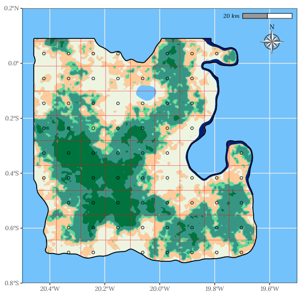

NFI eLearning Practice Module
Lesson 2: Simple sampling for carbon
Part 1: Sampling design
Part 1: Sampling design
Handbook with solutions - Version 1.0 - October 2021
Welcome

This interactive module is designed to complement the National Forest Inventory eLearning Modules with practical, hands-on exercises. As you learned in lesson one, these exercises take place on a fictional island that just emerged in the middle of the Atlantic Ocean: Louland.
The practice module features interactive lessons designed to practice National Forest Inventory (NFI) sampling and the exploratory analysis of NFI field data with the R programming language. Although this fictional land is not an official country, we will use the acronym NFI when referring to its forest inventory as the method and formulas applied here are valid for nationwide forest inventories.
Lesson 2 focuses on several sampling methods that we call “simple sampling” as they are based on the

This work is licensed under a Creative Commons Attribution-NonCommercial-NoDerivatives 4.0 International License.